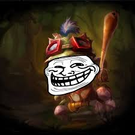

Un jugador "troll" en el contexto de los videojuegos, especialmente en juegos multijugador en línea como League of Legends, es alguien que actúa de manera deliberada para molestar, irritar o sabotear a sus compañeros de equipo o a sus oponentes. Los trolls suelen comportarse de manera disruptiva, haciendo cosas como jugar de manera incompetente, tomar decisiones irracionales que perjudican al equipo, o abusar verbalmente de otros jugadores. Por otro lado, "flamear" se refiere a la acción de insultar, criticar o provocar a otros jugadores de manera agresiva a través del chat o mensajes de voz durante una partida. Los jugadores que flamean pueden usar lenguaje ofensivo, hacer comentarios despectivos sobre las habilidades o decisiones de otros jugadores, o simplemente crear un ambiente negativo en el juego. Ambos comportamientos, el trolling y el flameo, pueden ser muy perjudiciales para la experiencia de juego de todos los involucrados, ya que pueden generar conflictos, reducir la diversión y afectar el rendimiento del equipo. Es importante tratar de mantener una actitud respetuosa y colaborativa mientras se juega en línea para promover un ambiente de juego positivo y disfrutable para todos.
